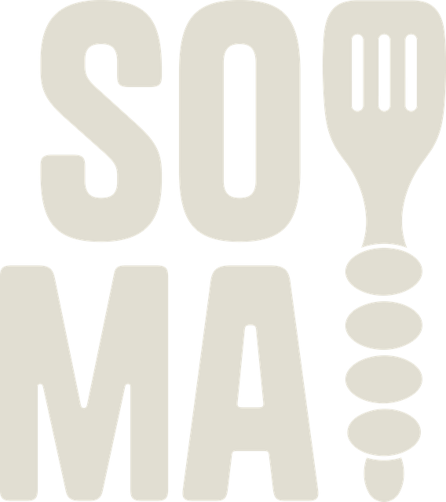
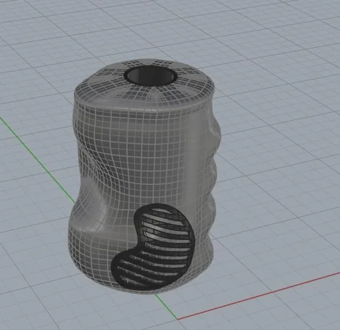
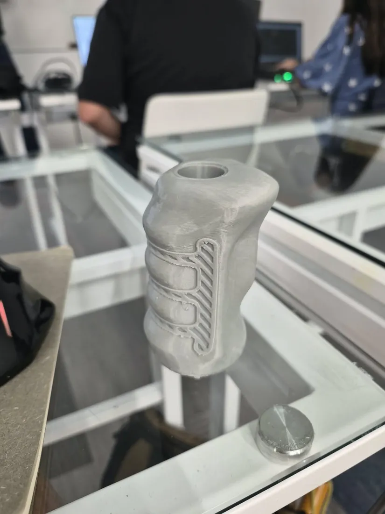
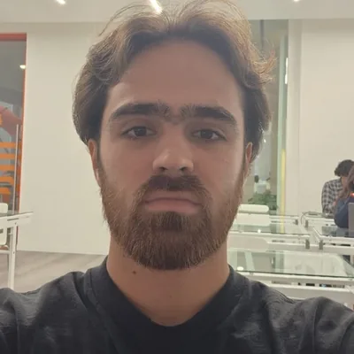
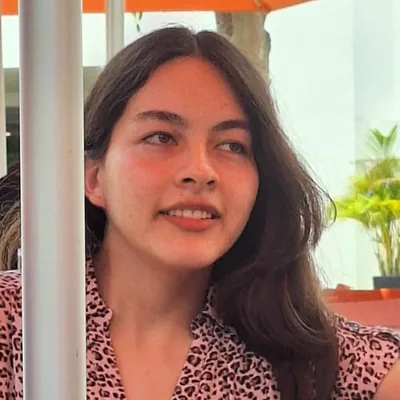

Misión
Diseñar utensilios de cocina funcionales y accesibles que ayuden a personas con dificultades de agarre o movilidad en las manos a realizar sus actividades cotidianas con mayor facilidad.
Somos un equipo multidisciplinario de diseño que cree que cocinar con comodidad, seguridad e independencia no debería depender de la fuerza de tus manos.

SOMA es una marca de utensilios de cocina diseñados para facilitar el agarre y el uso a personas con dificultades de movilidad o fuerza en las manos.
A través del diseño funcional y la adaptación de nuestros productos, buscamos que actividades cotidianas como cocinar sean más cómodas, accesibles e independientes. Nuestras formas redondeadas no son un capricho: transmiten cercanía, comodidad y estabilidad, la esencia de todo lo que hacemos.
Diseñar utensilios de cocina funcionales y accesibles que ayuden a personas con dificultades de agarre o movilidad en las manos a realizar sus actividades cotidianas con mayor facilidad.
Ser una marca reconocida por crear soluciones de diseño que mejoren la experiencia de las personas en la cocina y promuevan una vida más independiente.
1 de cada 6 personas en el mundo vive con alguna discapacidad, y con los años la fuerza y la movilidad de las manos disminuyen.
La artrosis afecta ya a cerca de 530 millones de personas, un 113% más que en 1990, y las manos son la segunda zona más afectada, solo después de las rodillas. En México, el 13.7% de las mujeres y el 5.3% de los hombres de 50 años o más declaran tener artritis (ENASEM, 2024).
Aun así, el entorno cotidiano está diseñado para quienes tienen capacidades físicas completas. La cocina depende de utensilios que exigen fuerza, precisión y un agarre firme. Cuando cortar, abrir o mezclar se vuelve difícil, aparece la dependencia y, con ella, la frustración y el aislamiento.
Las opciones que existen obligan a elegir: utensilios cómodos pero uno por tarea, bandas de silicona sin firmeza o puños con aspecto ortopédico. SOMA nace para cerrar esa brecha con un mango ergonómico, firme, versátil y atractivo, que respeta la autonomía y la dignidad de quien lo usa.
Fuentes: OMS (2023); ENASEM (2024).
Seguimos la metodología Design Thinking para que cada decisión parta de necesidades reales, no de suposiciones.
Escuchamos a los usuarios y sus dificultades en la cocina.
Elegimos el problema concreto a resolver.
Exploramos muchas soluciones a través de bocetos.
Modelamos en Rhino e imprimimos en 3D el prototipo.
Lo pusimos en manos reales y ajustamos lo necesario.



Diseño industrial, gráfico y multimedia trabajando juntos desde Mérida, Yucatán.

Diseño Industrial
Bocetaje, modelado e impresión 3D del producto.
Diseño Gráfico
Identidad visual del producto.

Diseño Multimedia
Renderización, visualización del producto y programación.
Diseño Multimedia
Renderización y visualización del producto y community manager.
Conoce el mango que nació de esta investigación.